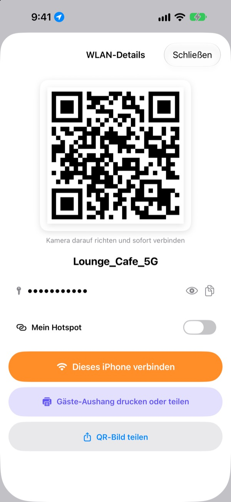
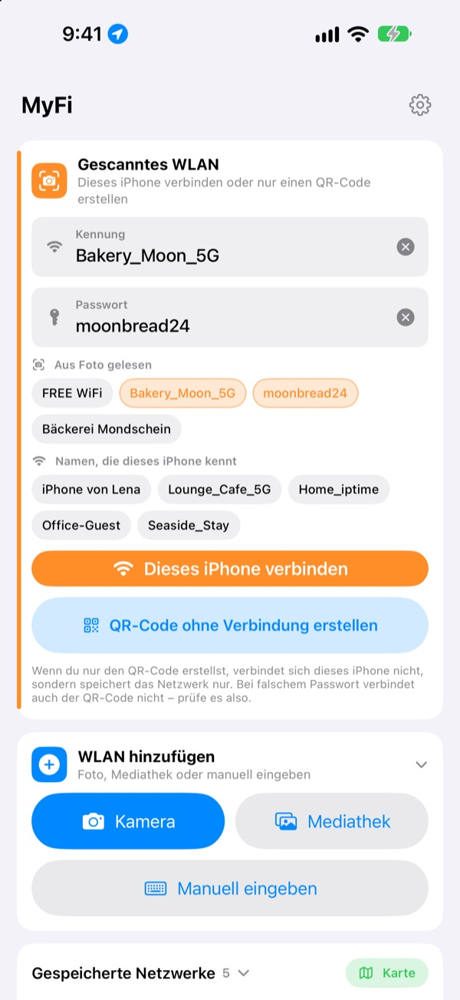
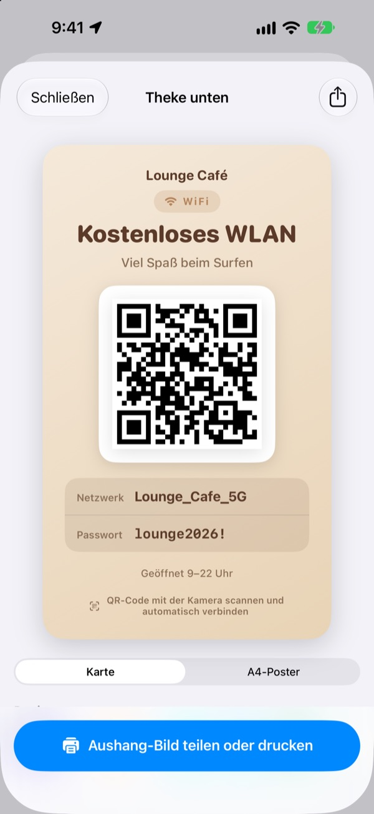
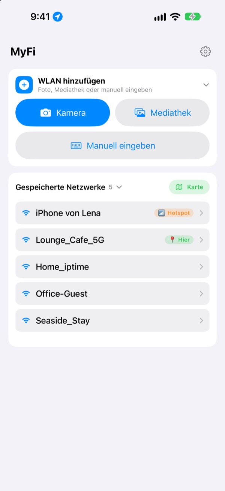

Kein Passwort mehr diktieren.
Ein QR-Code reicht.
Freunde halten nur die Kamera drauf und sind drin. Den Aushang an der Café-Wand fotografierst du einmal, und dein iPhone verbindet sich. Keine Tippfehler mehr beim Abschreiben.
Alle Funktionen sind kostenlos. iPhone ab iOS 17.

Mach deinen WLAN-QR-Code
Ändere Name oder Passwort, und der Aushang ändert sich sofort mit. Halt eine Handykamera drauf, dann erscheint wirklich die Frage, ob du dich verbinden willst.
„Wie war noch mal das WLAN-Passwort?“ Wie oft heute schon?
Du sagst es an und verwechselst Groß- und Kleinbuchstaben. Du schreibst den Zettel an der Café-Wand ab und verwechselst 0 und O. Dann erklärst du alles noch einmal. MyFi macht daraus ein Foto und einen QR-Code.
Fotografieren und drin sein
Fotografier den WLAN-Aushang oder den Kassenbon oder wähl ein Foto aus der Mediathek. MyFi liest Netzwerkname und Passwort und verbindet dein iPhone. Ist auf dem Aushang auch ein QR-Code, liest es zuerst den, damit alles exakt stimmt.
Ist der Text unklar, ziehst du einfach ein Stück aus dem Foto ins Namens- oder Passwortfeld.

Gäste-Aushang gestalten und drucken
Wähl eins von 7 Designs und füg Name, Logo und Zeilen wie Öffnungszeiten hinzu. Entscheide dich für Karte oder A4-Hochformat, sichere es als Bild oder druck es direkt per AirPrint.
Leg mehrere Aushänge an, für jedes Lokal oder jeden Tisch einen, und ändere sie jederzeit.

Wo du schon warst, steht ganz oben
WLANs, mit denen du dich verbindest oder die du teilst, werden mit dem Ort gespeichert. Kommst du wieder, steht dieses Netz ganz oben, und alle gespeicherten Orte siehst du auf einer Karte.
Leg den QR-Code deines meistgeteilten WLANs als Widget auf den Home-Bildschirm oder Sperrbildschirm. Fragt ein Gast, zeigst du einfach den Bildschirm.

In drei Schritten startklar
- 1
App öffnen
Sie fragt einmal nach dem Standort, weil iOS den Namen des aktuellen WLANs nur Apps mit dieser Erlaubnis verrät.
- 2
Fotografieren oder eingeben
Fotografier einen Aushang oder gib dein eigenes WLAN-Passwort einmal ein.
- 3
Verbinden oder zeigen
Verbinde dein iPhone oder zeig den QR-Code der Kamera deines Gegenübers.
Wo du was findest
- Mit dem Foto eines Aushangs verbinden
WLAN hinzufügen, dannKameraoderMediathek, dannDieses iPhone verbinden- Daten selbst eingeben
WLAN hinzufügen, dannManuell eingeben- Nur einen QR-Code erstellen
QR-Code ohne Verbindung erstellen- QR-Code per Nachricht schicken
- Gespeichertes Netz antippen, dann
QR-Bild teilen - Gäste-Aushang
- Gespeichertes Netz antippen, dann
Gäste-Aushang drucken oder teilen - Eigenen Hotspot als QR-Code
- Gespeichertes Netz antippen und
Mein Hotspoteinschalten - Mit einem Wisch verbinden oder teilen
- In der Liste nach rechts wischen zum Verbinden, nach links zum Teilen
- Gespeicherte Orte ansehen
KartenebenGespeicherte Netzwerke- QR-Code auf dem Home-Bildschirm
- Home-Bildschirm gedrückt halten und das MyFi-Widget
WLAN-QR-Codehinzufügen
Den QR-Code kannst du auch direkt mit Siri oder der Kurzbefehle-App öffnen.
Alle Funktionen sind kostenlos
Kostenlos
- Mit einem Foto ins WLAN
- QR-Codes erstellen und als Bild teilen
- Gäste-Aushänge in 7 Designs, als Karte oder A4-Poster, Druck per AirPrint
- Widgets für Home- und Sperrbildschirm
- Karte deiner gespeicherten WLANs
- Keine Werbung, keine Anmeldung
Trinkgeld (freiwillig)
- Wenn dir die App gefällt, kannst du die Entwicklung mit einem Trinkgeld unterstützen
- Trinkgeld schaltet nichts frei. Auch ohne hast du jede Funktion
Ein Trinkgeld ist eine kleine einmalige Zahlung.
Kein Abo und keine kostenpflichtigen Funktionen.
Häufige Fragen
Warum muss ich mein Passwort selbst eingeben?
iOS lässt keine App die auf dem Gerät gespeicherten WLAN-Passwörter lesen. Deshalb erkennt MyFi den Netzwerknamen, und das Passwort gibst du einmal ein. Danach nutzt die App das gespeicherte.
Ich sehe den Namen meines aktuellen WLANs nicht.
iOS gibt den WLAN-Namen nur an Apps mit Standortzugriff weiter. Erlaube MyFi unter Einstellungen › Datenschutz & Sicherheit › Ortungsdienste. Der Standort dient nur dazu, den Netzwerknamen zu lesen und Orte wiederzuerkennen.
Name oder Passwort wurden falsch gelesen.
Geh näher ran und fotografier gerade. Stimmt es dann noch nicht, zieh das richtige Stück aus dem Foto ins Feld oder korrigier es von Hand. Hat der Aushang einen WLAN-QR-Code, liest MyFi den und trägt alles exakt ein.
Welche Aushänge kann es lesen?
Am besten klappt es mit Aushängen, die englisch oder koreanisch beschriftet sind, etwa ID, PW, SSID, Network oder Password. Auch ohne Beschriftung findet es die Zeile, die wie ein Passwort aussieht. Ein WLAN-QR-Code auf dem Aushang wird in jeder Sprache exakt gelesen.
Wie verbindet sich jemand mit meinem QR-Code?
Auf iPhone wie Android einfach die eingebaute Kamera auf den Code halten und auf die Verbindungsfrage tippen. Eine App braucht es dafür nicht.
Können andere mein Passwort sehen?
Der QR-Code enthält die üblichen WLAN-Zugangsdaten. Ob du teilst, entscheidest immer du, und auf dem Gäste-Aushang kannst du das Passwort ausblenden.
Warum kann ich mich nicht mit meinem eigenen Hotspot verbinden?
Der persönliche Hotspot deines iPhones ist ja dieses Handy selbst, mit sich selbst kann es sich nicht verbinden. Schalt Mein Hotspot ein, dann behandelt MyFi ihn als QR-Code zum Weitergeben.
Wohin gehen meine WLAN-Daten?
MyFi hat keinen Server. Netzwerknamen, Passwörter, Fotoauswertungen und Standorte werden nur auf deinem Gerät verarbeitet und gespeichert. Es gibt keine Werbung und kein Tracking. Die App sendet nur anonyme Nutzungsstatistiken und Fehlerberichte an Apple iCloud, damit sie verbessert werden kann.
Auf welchen Geräten läuft es?
Auf dem iPhone ab iOS 17. Die App gibt es in 24 Sprachen.
Fragen oder Feedback? Schreib an leeo@kakao.com. Ich antworte meist innerhalb von 2 bis 3 Tagen.